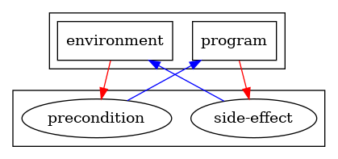
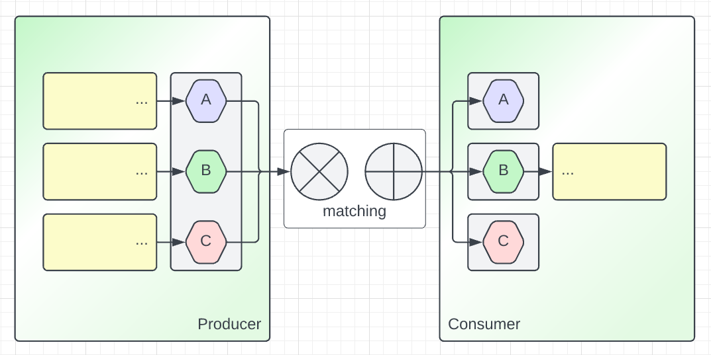
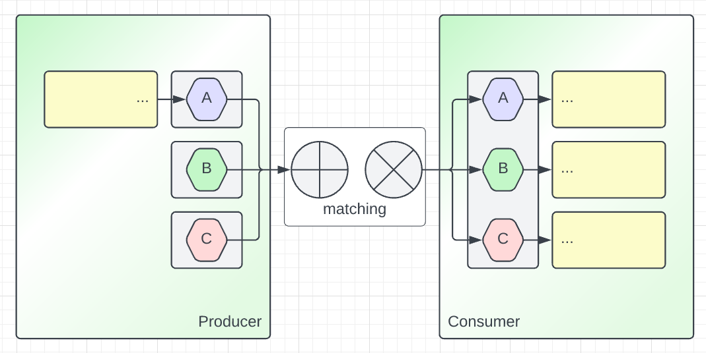

On Dualities
On Tue, 01 Mar 2022, by @lucasdicioccio, 3266 words, 2 links, 3images.
This article is still considered unfinished and content may change significantly.
Functional programming has taught me to simplify superfluous concepts: identify what are primitive concepts and what are constructions on top these primitives. The constructions themselves need not be multiplied out of proportion: it is better to stick to few ways of combining entities and concepts. Overall, I think I found some internal peace with programming languages when I could recognize enough of such primitives and how to make use of them in various programming styles. Among the techniques that I use to recognize when two concepts complement each other is to emphasize when two things are in a duality.
A situation of duality is when two concepts cohabit well while appearing in opposition. In a sense, two dual concepts connect and perform some symmetrical dance. I would say that finding that two things are dual is like realizing that it’s not the Earth that rotates around the Moon, nor the Moon rotates around Earth, but in facth both celestial bodies dance and rotate around a same point (the barycenter). Discovering such rules brings clarity and simplicity to our understanding of a problem. Since a key part of our job in software engineering is to tame complexity, recognizing such simplifications are useful.
{kind=link}
The existence of the barycenter of the Earth-Moon system is a consequence of
the mathematical formulas we use to model the physical world. It is worth
training our sense starting from simple (even simplistic) equations. For
instance, let’s take the simplest form of duality: the equality of two values.
The two sides of an equality a = b are in a dual relationship: what happens
to a requires a commensurate compensation on b. In the real world you
rarely encounter some simple rule saying a = b, more often terms like a and
b actually are contraptions. For instance b is the result of something
involving c and d and other values. Whatever the particular instance you
find, what happens to a likely has implications on these c and d and
other values. As systems grow in complexity, such equalities may blossom
unsuspectedly, and if the formula for the equality is too obscured to be
spelled-out, unfathomable dynamics will happen.
Although software is not cosmology, and even if no Great Watchmaker seems
needed to enforce laws of equalities (we trust CPU founders to do so),
dualities exist in software. Software can be modeled with mathematical concepts
from discrete logic rather than calculus and differential equations. If I had
to choose, I would say that the root of all dualities in software are De Morgan’s laws (in particular, see the section about extensions to predicate and modal logic).
Let’s say that a “negated” value is a consumer whereas a “positive” value is a producer. Also, let’s say that a OR encodes alternatives whereas a AND encodes co-occurrences. Applying De Morgan’s law NOT (x OR y) = (NOT x) AND (NOT y) could be read as to consume either X or Y we need the co-occurence of a consumer of X and a consumer of Y.
We will leave such a bureaucratic formalism out of this article but there is
not much more to it: a simple logical rule. Instead, I’ll spend time elaborating at a higher-level. In particular I would like to stress how important the producer/consumer duality is in software and how this duality is interlocked with yet another important duality: the alternative/co-ocurrence duality.
The producer/consumer duality
We do not write code in a vacuum. Even if we write code for no purpose, the programming language has logical rules, running a program happens on a physical machine subject to physical and logical rules of the CPU or those of the virtual machine. Even if we only imagine some code without writing it (e.g., while sketching out an API in our mind), our imaginary simulation of the running code will entail some logical rules. In any case some dualities are likely to arise. In particular, a useful program either consumes some data (e.g., a configuration file), or produces some data (e.g., a PNG image). More often, a programs both consume and produce some data but the data-consumption-side and data-production-side of a program operate on distinct sets.
I specifically want to avoid conflating inputs and outputs with produced and consumed data. Although I believe that input and output are in a consumer/producer duality, I also want to encompass side-effects in this duality. A trick in functional programming is to pretend that the external world is a hidden input and hidden output of a pure function. The problem I find with this external-world object is that the external world is both consumed and produced, apparently giving a symmetrical role to the external-world object (for the better or the worst, our programming practice focuses almost only on the program and takes the executing environment as an unprogrammable thing with its own will). I prefer to conceptualize side-effects as entities merely produced by programs. Side-effects then are consumed by their executing environment. In this viewpoint, the program and the executing environment are the two partners performing a tango dance (or the two opponents in a tennis-game if you prefer sport over artistic metaphors). This viewpoint brings the question: what is the dual to a side-effect? It is something that an executing environment provides and that a program consumes (and hence it may destroy it), and I claim that would be pre-conditions. Summarizing, in this viewpoint a program consumes pre-conditions and produces side-effects and could be illustrated as follows:

I spoke about “programs” without precisely describing the kind of program I wanted to describe. Indeed, I believe that such a duality exists at different scales of programming. When zooming in at the individual module, object, or function, we can easily outline pieces of code that produce and consume objects or data-structures. I believe the same rule exists when zooming out a the service level. We just lack proper nouns to disambiguate whether a service mainly produces or consumes other services (indeed, much like the external-world object trick in FP: we conflate the co-occurrence of two distinct phenomenon because when focusing on a sole viewpoint both ends meet). I do not have excellent suggestions to make, but if I were to pick some words today I would say that, a service is being a producer of functionalities that are consumed as capabilities by external-services.
What are the consequences of the dual roles of producers and consumers? Well, there is a point that when you need to modify a producer you need consumers to adapt in a dual way. It’s common to speak about API contracts to provide a way to match consumers with producers. However I find that speaking at length about the value of contracts falls short. Contracts are shallow, they merely are the tips of the consumers and producers code. We actually can derive much more information than “ok the consumers and producers must agree on a contract”. In particular, we need to be precise about the consequences of changing a producer linked to a consumer. To answer such questions, we need to take a close look at how the producers/consumers duality interacts with the alternative/co-occurrences duality.
The alternative/co-occurrences duality
Alternatives and co-occurrences are well captured with what are called
sum-types and product-types in typed-programming languages. Product-types
are pervasive in programming, they correspond to your day-to-day data structure
that is made of a set of fields. For instance, a user could be represented in
some informal pseudo-code type User = { Name x Email x FavoriteColor }. This
notation means that a when you are presented a User object, you also have the
co-occurrence of three separate entities: Name, Email, and FavoriteColor,
and you can splice them out at will and independently.
Sum-types, for no clear reason, have less support in the most-established
programming languages. To be precise, user-declared sum-types are not really
available. A boolean is the simplest example of sum-types, it presents two
alternatives type Bool = { False | True }, that is when you have a Bool, you
may have either a False or a True but not both at a same time. You could
have a type with three alternatives (e.g., to encode a subscription plan with
three tiers type Plan = { Free, Pro, Enterprise }).
With knowledge of product types and sum types, a compiler or a linter can tell
you that you made a mistake (e.g., you forgot to give an Email to build a
User, or you forgot to provide a template for the Pro subscription email).
Indeed, automated tools have enough information about all possible alternative
and all required fields that must co-occur. Since we are discussing dualities
and we have discussed about the producer/consumer duality. You may already
sense where this post is going: we need to explore what happens to the
consumer-side of a produced sum-type or of a produced product type.
Given that a product type is a co-occurrence of independent facts, when you produce a product type, the consumer CAN have multiple independent data handlers and all can execute. Whereas when you produce a sum type, the consumer MUST have independent data handlers and only one executes.
Finally, let’s note that a data handlers can also be stored in data types (e.g., with lambdas if the language supports it, or with factory-patterns otherwise). Such data types – containing handlers – themselves can be product and sum types. Putting everything together, we note that producers of alternatives require a the co-occurrence of consumers whereas producers of co-occurrences require alternatives of consumers. That’s it, our two dualities are interlocked.
We can illustrate this duality with pictures by displaying a producer and a consumer being matched together.
On the one hand, we shall illustrate a producer of product-type. Visually we
try to convey the code that is written with the yellow boxes with ...
ellipsis text in them.

The Producer returns a co-occurrence of three pieces of information (the
product type {A,B,C}). Therefore, the Producer must have code to introduce or
carry-over these three independent piece of information. Given that the
Producer’s output contains these three pieces of information, the Consumer is
free to pick any alternative combining A, B, or C. When Producer and
Consumer are decoupled, the Consumer may not even have code to consume A or
C and only cares about B.
On the other hand, we also need to illustrate the dual situation where the Producer provides a sum-type.

Given that the Producer provides an alternative (again, it may be that there is code for only one possible case), if the Consumer is decoupled from the Producer, then the Consumer must be ready to handle every case.
Much like when we first introduced the producer/consumer duality, we have been pretty indiscriminate about the exact family of producer and consumers.
Indeed, the alternative/co-occurence duality stands for all scales. The only requirement for the duality to exhibit consequences is that a consumer and producer establish some communication (i.e., when we match a consumer with a producer). For instance at the library-scale, the producer could be a library function you call. Your own code would be the consumer of this function. When the library function returns a sum-type (for instance, either an error or a successful result) you should forcefully verify that you have a piece of code to handle either branches. At a service-scale, a web-API with multiple routes or a gRPC service with multiple methods can be framed as a collection of endpoints (i.e., a co-occurrence of handlers) whereas the client-side has the choice to pick any endpoint (i.e., and alternative of endpoints). In summary, the party that can force the dual party to behave in a certain way is the party deciding on the alternative picked in the sum-type side of the producer/consumer interface.
It is worth stressing that the alternative/co-occurrence duality shows up irrespective of the particular role (consumer or producer) of the API-client versus the web-API. Indeed, whether the client of the API is seen as a consumer (e.g., fetching data) or a producer (e.g., pushing data) does not change the fact that at the interface level, the client holds the choice of picking the endpoint. This distinction is important to recognize the proper interface between a producer and a consumer. In real-world situations, software components take both roles in alternation: a web-API may be seen as a producer of endpoints, but to implement an handler for such endpoint, the web-API is a consumer of other services or a consumer of libraries, and so-on and so-forth. Therefore, recognizing the particular interface may be difficult. Indeed, when we say a web-API client is a consumer, the payload that the web-API produces could either be a product-type (i.e., the servers returns a co-occurrence of data and the client is then free to act starting from this data), but the result could also be a sum-type (i.e., the server returns a particular alternative to force a behaviour on the client – for instance an unauthorized response would force a client to initialize an authentication challenge). When analyzing real-world systems, we realize that communications between systems is a fractal of consumers and producers matched with each others and communicating of product-types and sum-types. Thus, when conceptualizing a system, we need to find the right levels where systems interface with each others and we must study a few nested layers of messages they interact with.
A key reason for studying more than a single level of interface is that it is possible to mechanically flatten nested layers of alternatives/co-occurrences. Such a flattening is useful both as a concept but also as a refactoring tool. The flattening law comes straight out of arithmetics, and is “just” the distribituvity property of products over sums.
Formally the distributivity is written as a * (b + c) = (a * b) + (a * c)
In plain English, the two following statements
are equivalent:
- you certainly get an
aand alternatively get aband ac - you alternatively get an
apaired with abwith certainty orapaired with acwith certainty
Much like arithmetics formula we can theorize systems at various scales with similar formulas, and then factorize or develop these formulas. We will expand on this key property in the next section, but let’s first summarize what we’ve seen.
Summary
- in a general sense, consumers and producers are in a duality relationship
- alternatives (sum-types) and co-occurrences (product-types) also are dual of each other
- both dualities interact following some interaction law
- producers of sum-types match product-types consumers
- producers of product-types match sum-types consumers
- these properties are invariant of the scale (i.e., it holds at the function, library, service level)
- communicating systems involve layered consumer/producers, producers/consumers may alternate from one layer to another
- there is a distributivity law to factorize or develop layers of {sum,products}-of-{sum,products}.
Consequences
The important consequence of the interactions of product/sum with consumer/producer is that you do not need to be a compiler to foresee whether two pieces of software “connect” well or not. You can foresee errors, planify refactorings, and prepare architecture documents for splitting a monolith into services (or when agglomerating too-thin services into larger ones).
flattening an http response
Say that you are calling a library function that returns an a * (b+c), for
instance, an HTTP response could be represented as headers ~= a and body ~= b if the response is valid, c if it's an error message. Since a * (b + c) is
equivalent to (a * b) + (a * c). You can decide to write a handler for “HTTP
headers with a body” return value separately from a handler for “HTTP headers
with an error”, and collate these two in a single handler for “HTTP headers
with either a body or an error”.
If we go further and it happens that b = c + d (e.g., d is a decoded JSON
object and c is an error message), we can write down the consequences:
a * (b + c)
= (a * b) + (a * c) [distributivity]
= (a * (c + d)) + (a * c) [b=c+d]
= (a * c) + (a * d) + (a * c) [distributivity]
= (a * c) + (a * c) + (a * d) [commutativity*]
This series of equation means that the HTTP-response handler in our example
actually is made of two posibly-independent error-handler pieces of code (a * c) and a success-handler taking a decoded JSON value (a * d). We have not
discussed about commutativity here but in general depending on what your
operations entails, they may not commute, for the case of decoding JSON values
we could safely assume that decoding commutes as one would expect decoding to
be deterministic and require no exogenous side-effects.
That’s a lot of information about the code when only looking at a type-description!
refactoring API services with multiple endpoints
We’ve said earlier than a web-API is a product of handlers. Thus, to say that
an API implements a * (b + c) at a conceptual level means the web-API has two
routes (the * at the first layer) and the payload of the second type is known
to be a sum-type (b+c). If we apply distributivity we get (a * b) + (a* c) , that is a single endpoint (no * operand at the first layer) with a payload that is a sum of products.
We can illustrate this operation with the following pseudo-API description of two web-APIs.
POST /route-one
{"payload-a":"a"}
<=> POST /route-combined?branch=case-b
{"payload-a": "a", "payload-b": "b"}
POST /route-two?branch=case-b
{"payload-b": "b"}
Both situations allow to match similar clients and servers exchanging similar
information. However we can see that on the left-side, the client of the API
is free to call route-two even if it does not have a payload-a to offer,
whereas in the right situation, the client of the API must have a payload-a
to call route-combined.
Note that when we say the representations are equivalent, we mean that either
a * (b+c) or (a*b) + (a*c) are entirely produced and consumed.
Commutativity is important in the first case.
A counter example, where you would believe that you can introduce the same transformation is as follows. Say you have to pick between using one endpoint or a series of endpoints. In both case you will need to encode some branching logic: in the URL path or in the payload.
POST /foo/bar POST /foo
{"hello": "world"} {"hello": "world", "branch": "bar"}
<=>
POST /foo/baz POST /foo
{"hello": "world"} {"hello": "world", "branch": "baz"}
The key issue here is that we have product types at the API layer, i.e., our only way to factorize this is to use what is known as … you guess it, an exponential type.
a x a x .... [k times] = a ^ k
And they correspond to functions with an argument. In short, if you had five handlers, you can factorize that into one handler having an extra argument taking five possible values. There is no duality involved here, but it is interesting to note that the product/sum extends to more arithmetics.
Exponentials a ^ k varies from products a x k because if we keep this sense
of fully-consuming either inputs, you would need to consume multiple a versus
consuming a single a. Indeed, a client that has the alternative to pick many
different A with various handlers, to get the same behaviour we still need the
possibility to handle a differently based on the branch value.
auditing the importance of introducing new edge cases
We could consider what happens when A = B is relaxed into A <= B or A >= B, that
would bring us to Liskov substitution principle, variance and covariance. You
can treat the A >= B case by saying that extra-alternatives need extra branches.
monoliths, microservices, and IT-system architectures
We assumed so far that A -> B was a function like a Python or Java function.
We can actually think of -> as a many data-transfer mechanisms: remote procedure calls, HTTP queries, task message, SQL queries.
So now if you have a service that produces objects with two possible shapes A or B, you know the consumers will require pairs of branches.
Similarly, you could have a pair of services (e.g., archived-orders and fresh-orders), possibly with different data-format. Your website will thus either need to uniformize.
In short, the sum-product dualities will severely leak into the data-access patterns of your services.
Other dualities
null vs. default
Much has been written about null being the billion-dollar error.
Well, my belief if we should regard defaults with the same horror, because
default values are the dual of null values.
push vs. pull
With evented architectures being trendy, people tend to oversell the power of push-based architectures over pull-based. However there is a dual tension between the two.
Push is write and Pull is read.
Some work are inherently push-based: everything that has a sum as input (e.g., two operations that may occur).
Some work are inherently pull-based: everything that requires a product as input (e.g., consensus to know the true value, when debugging you need a product of dataset to recreate a full context).
Thus, no big surprise, push-based architecture actually are full of pull-based mechanisms.